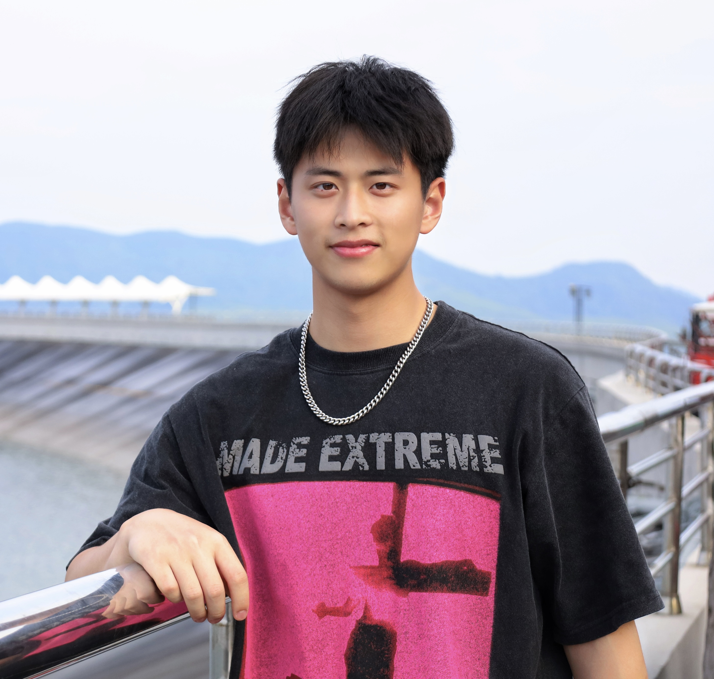
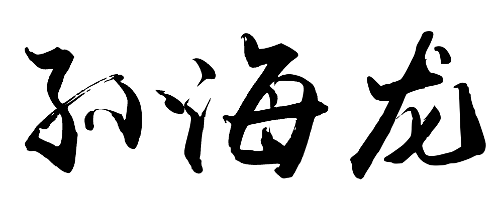
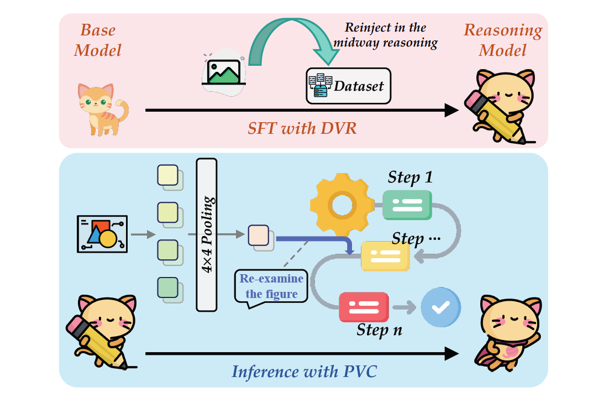
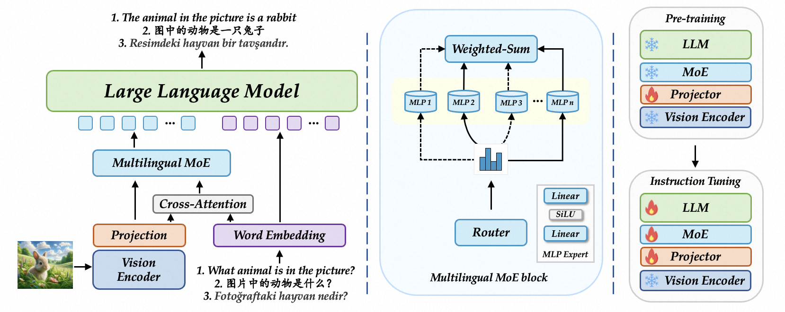
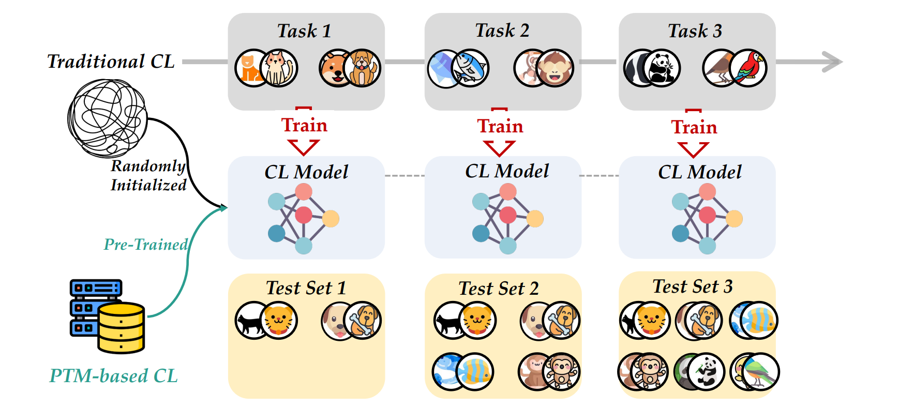
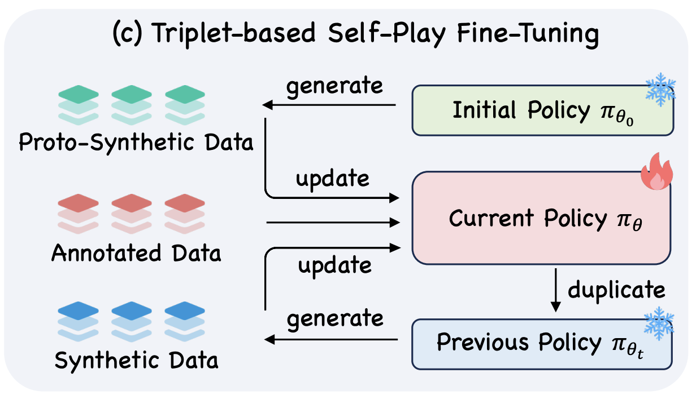

Hai-Long Sun

M.Sc. Student
School of Artificial Intelligence, Nanjing University
sunhl (at) lamda.nju.edu.cn Blog

👀 About Me
Currently I'm a graduate student of School of Artificial Intelligence in Nanjing University and a member of LAMDA Group, which is led by Prof. Zhi-Hua Zhou.
I received my B.Sc. degree from College of Computer Science & Technology, Nanjing University of Aeronautics and Astronautics in June 2023 (GPA ranked 1 / 120). In the same year, I was admitted to study for a M.Sc. degree in Nanjing University, under the supervision of Prof. Han-Jia Ye without entrance examination.
📣 News
🌟 Research Interests
My research interests include Machine Learning and Data Mining. Currently, I focus on Multimodal Large Language Models and Continual Learning.
🚀 Publications


-

ACLMitigating Visual Forgetting via Take-along Visual Conditioning for Multi-modal Long CoT ReasoningACL'25. CCF-A[Paper] [Project Page] [Huggingface]
-

ICMLParrot: Multilingual Visual Instruction TuningICML'25. CCF-A[Paper] [Code] [Project Page] [Huggingface]
-

IJCAIContinual Learning with Pre-Trained Models: A SurveyIJCAI'24. CCF-ATop-4 Most Influential IJCAI Papers
[Paper] [Code] [中文解读] [Media]
-

NeurIPSTriplets Better Than Pairs: Towards Stable and Effective Self-Play Fine-Tuning for LLMsNeurIPS'25. CCF-A[Paper] -
NeurIPS


 Technical Report
Technical Report


🏆 Awards & Honors & Contests
- 2025, National Scholarship for Graduate Students
- 2022, CCF Elite Collegiate Student Award
- 2020/2022, National Scholarship for Undergraduates
- 2022, Grand Prize(全国唯一特等奖), China Collegiate Computing Contest - Network Technology Challenge in Track A
- 2022, Bronze Medal, ACM-ICPC Asia East Continent Final Contest
- 2020, Second Prize, The First China AI Guandan Algorithm Competition
- 2022, Gold Medal, Jiangsu Collegiate Programming Contest
- 2022, Meritorious Winner in MCM/ICM
- 2023, Outstanding Graduate of Nanjing University of Aeronautics and Astronautics
- 2023, 全国单打亚军、团体季军, 第26届全国大学生网球锦标赛总决赛
- 2024, 江苏省单打冠军、团体冠军, 2024年江苏省大学生网球锦标赛
- 2024, Champion, The Second Scientific Figure Captioning Challenge @IJCAI'24
- 2024, 特等奖, 挑战杯“揭榜挂帅”专项赛-中国电信赛道
👨💻 Internship Experience
2024.03~2024.10, Alibaba, AIDC-AI Business, MLLM Research Intern
2024.10~2025.04, Tecent, TEG Group, Hunyuan Research Intern

2022.08~2023.03, Bytedance Data
🎯 Service
- Conference Reviewer: CVPR'24, NeurIPS'24, ICLR'25🏆, CVPR'25, ICML'25, ICCV'25, NeurIPS'25, ICLR'26, CVPR'26
- Teaching Assistant: Introduction to Machine Learning. (For undergraduate students; Autumn, 2023)
📮 Contact
- Email: sunhl (at) lamda.nju.edu.cn
- Address: Hai-Long Sun, National Key Laboratory for Novel Software Technology, Nanjing University, Xianlin Campus Mailbox 603, 163 Xianlin Avenue, Qixia District, Nanjing 210023, China. (南京市栖霞区仙林大道163号, 南京大学仙林校区603信箱, 软件新技术国家重点实验室, 210023)
Many thanks to Yaoyao for sharing this great theme.